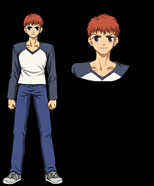

Эмия Широ (яп. 衛宮 士郎)

Ученик второго класса старшей школы города Фуюки. Потерял своих родителей в прошлой войне Святого Грааля, проходившей в городе 10 лет назад. Его приемный отец — Эмия Кирицугу — был магом и участвовал в войне как мастер. Он стал для юного Широ примером для подражания, так как стремился помогать всем людям, используя свои способности. При этом Кирицугу не решился обучить Широ каким-либо заклинаниям, за исключением одного-единственного магического приема (см. ниже). После смерти приемного отца, за Широ стала присматривать Фуджимура Тайга — внучка старого друга Кирицугу и учительница в школе. Став участником очередной войны за Святой Грааль, Эмия Широ не желает сражаться с кем бы то ни было, однако, он узнает, что та катастрофа, из-за которой погибли все его близкие — это порождение Грааля. Если этот артефакт попадёт в руки безумца — эта катастрофа может повториться вновь. Эмия Широ обладает редкой для мага способностью — трэйсингом (от англ. To trace — «снимать копию») —
копированием и созданием объектов и вещей. Впоследствии окажется, что он способен до крошечных деталей воссоздавать копии любого оружия и любых артефактов, которые ему доводилось увидеть.
Слуга
Назад